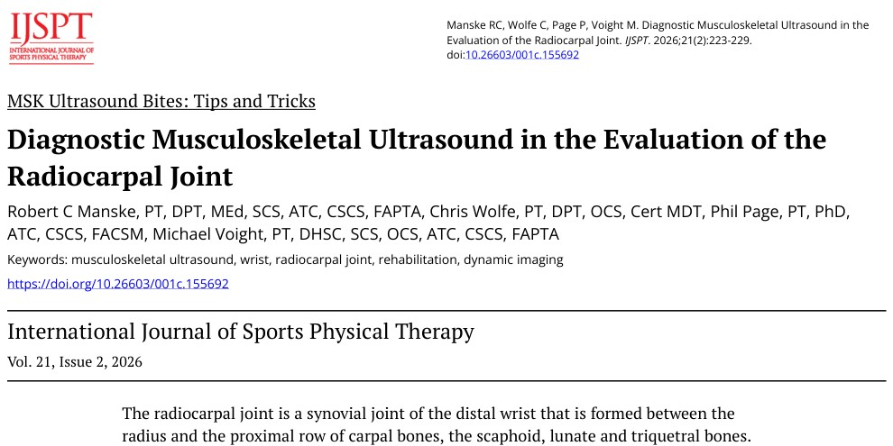
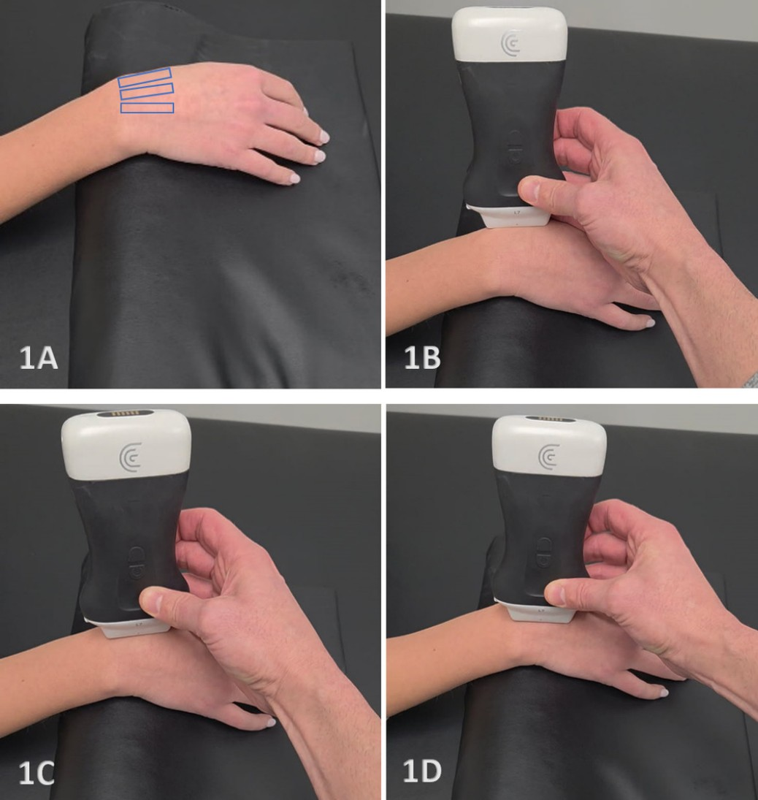
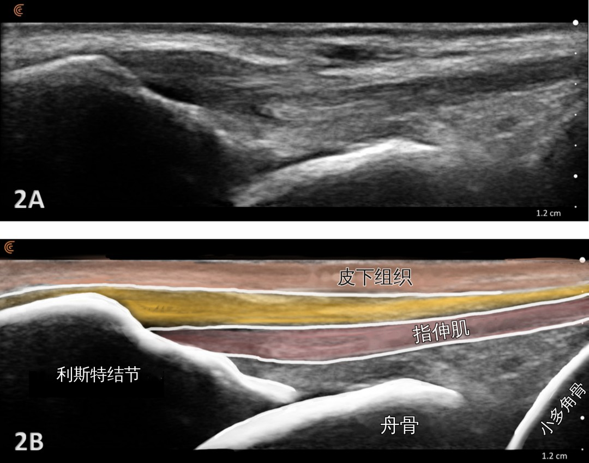
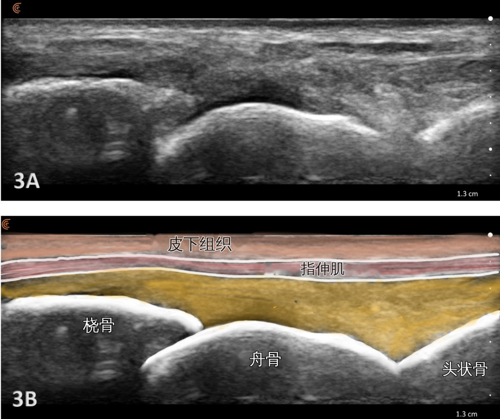
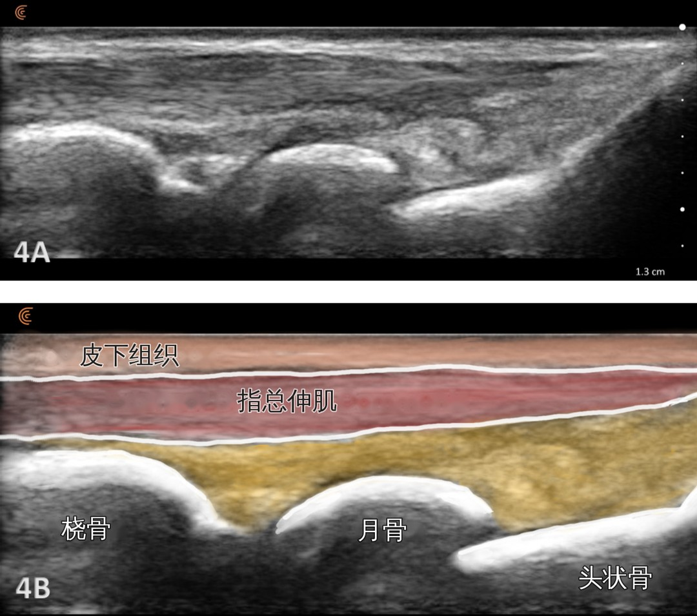
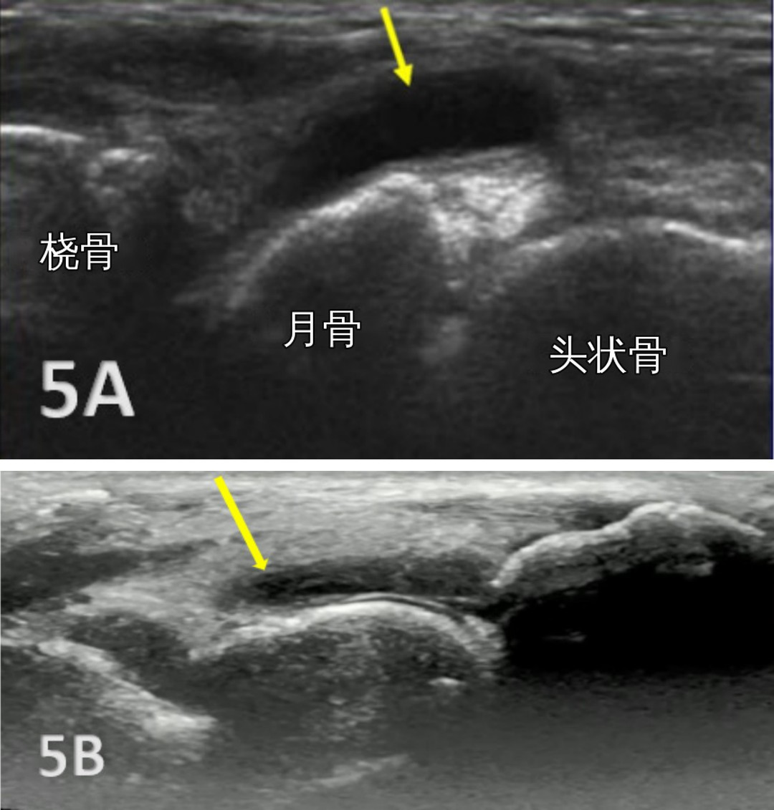
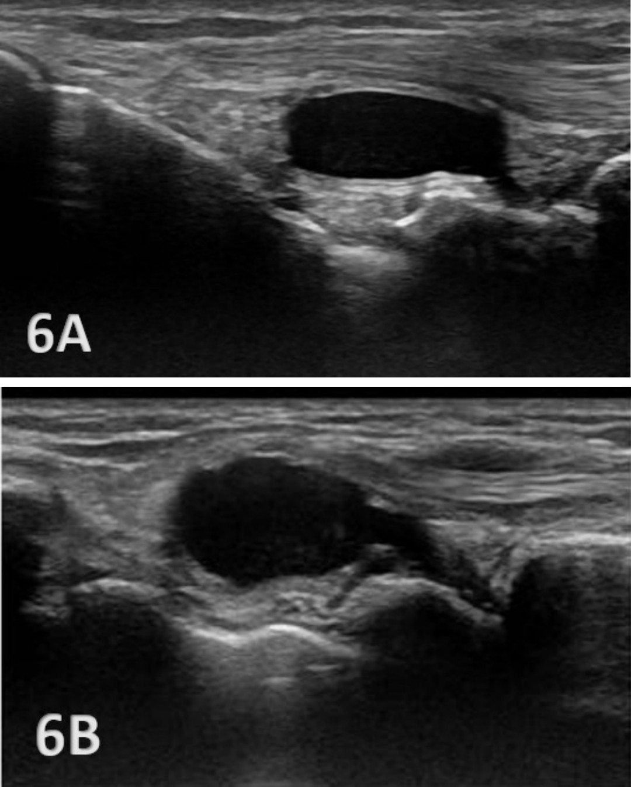
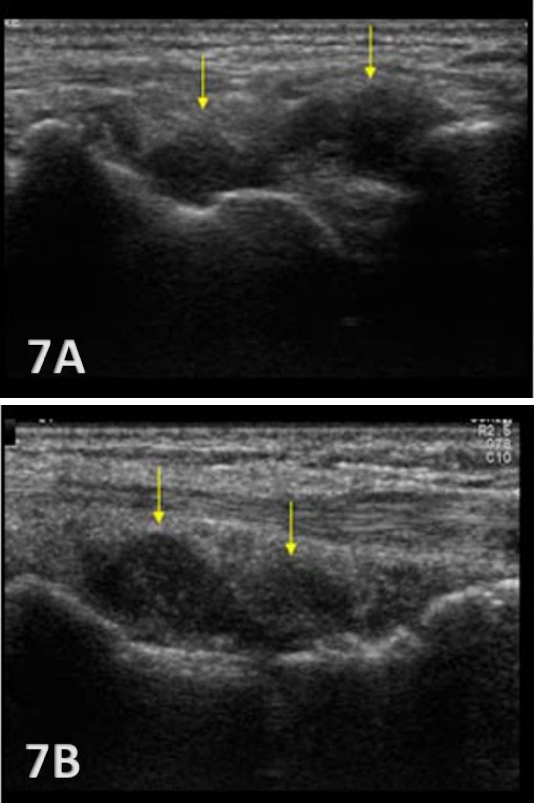

🔖图1：原文首页（IJSPT 2026 年第 21 卷第 2 期）
📚 文献卡片
▪ 英文原题：Diagnostic Musculoskeletal Ultrasound in the Evaluation of the Radiocarpal Joint（肌骨超声在桡腕关节评估中的应用）
▪ 作者：Robert C. Manske, PT, DPT, FAPTA · Chris Wolfe, PT, DPT, OCS · Phil Page, PT, PhD · Michael Voight, PT, DHSc, FAPTA
▪ 栏目：MSK Ultrasound Bites: Tips and Tricks（肌骨超声小贴士专栏）
▪ 期刊：International Journal of Sports Physical Therapy（IJSPT）
▪ 年卷期：2026;21(2):223-229
▪ DOI：10.26603/001c.155692（PMCID：PMC12872188）
▪ 文章类型：技术操作类专栏文章（原文未标注证据级别）
▪ 关键词：musculoskeletal ultrasound · wrist · radiocarpal joint · rehabilitation · dynamic imaging
"Due to its small size, and variety of structures in a small space, diagnosis of acute radiocarpal injury by physical examination is often difficult."
"由于桡腕关节体积小、狭小空间内结构众多，单靠体格检查诊断急性桡腕关节损伤往往很困难。"
手腕疼痛在门诊里非常常见，既有摔倒撑地的急性外伤，也有反复用力的过度使用。但手腕背侧几平方厘米的范围里，挤着骨、软骨、关节囊、韧带、肌腱和滑膜，光靠按压和活动很难判断到底是哪里出了问题。
肌骨超声（MSKUS）便携、实时、便宜，越来越多地进入康复和运动医学场景。这篇来自 IJSPT “肌骨超声小贴士”专栏的文章，手把手讲了桡腕关节的探头怎么放、正常长什么样、异常怎么认。
整篇文章的核心操作只有一个：探头沿前臂纵向放在手腕背侧，从桡侧开始，分三步向尺侧平移。
| 切面 | 探头位置 | 能看到的结构 |
|---|---|---|
| 切面 1 | 腕背桡侧，放在 Lister 结节上（体表以桡骨茎突定位） | 桡骨远端、舟骨、小多角骨 |
| 切面 2 | 向尺侧平移，桡骨茎突移出画面 | 桡骨远端、舟骨、头状骨近端 |
| 切面 3 | 继续向尺侧平移 | 桡骨远端、月骨、头状骨 |
再记住一句：正常的桡腕关节隐窝是“瘪”的——看到液体、增厚的滑膜或囊性结构，就要提高警惕。
• 关节类型：双轴椭圆关节，有两个自由度——屈伸、桡偏 / 尺偏
• 近端：桡骨远端的两个凹面（分别对舟骨和月骨），以及三角纤维软骨复合体（TFCC）
• 远端：近排腕骨——舟骨、月骨、三角骨，组成凸面
• 三角骨：不直接和桡骨相关节，而是通过 TFCC 间接相连
"As these bones have no actual muscle attachments, they form what is known as an intercalated segment, meaning they are dependent on the forces from muscles crossing their joints to create movement."
"由于这些骨没有肌肉直接附着，它们构成所谓的“闰位节段”，也就是说，它们的运动依赖于跨过其关节的肌肉所产生的力。"
💡这就是为什么近排腕骨的稳定性高度依赖韧带——韧带一旦受伤，就容易出现排列紊乱和不稳。
| 优势 | 局限 |
|---|---|
| 无创，可检查腕部韧带和骨 | 高度依赖操作者的技术和经验 |
| 实时成像，可边动边看 | 深部结构显示受限（但腕部结构大多表浅） |
| 分辨率高，能看清细小韧带 | 骨和钙化会产生伪影和声影 |
| 便携、普及、比 MRI 便宜 | 复杂病例不能完全替代 MRI |
• 探头：高频线阵探头；必要时用 L 形“曲棍球杆”探头
• 体位：患者坐位，面对检查者，前臂放在检查台上、旋前，手腕轻度屈曲，让背侧关节隐窝张开
• 切面：长轴（LAX）看桡腕关节；短轴（SAX）看舟月韧带
• 动态检查：让患者主动屈伸手腕，同时观察背侧软组织和骨
"The dorsal surface is normally viewed as the structures are more superficial and easier to visualize."
"通常从背侧扫查，因为背侧结构更表浅、更容易显示。"

🔖图2：1A：患者体位，前臂旋前、手腕轻度屈曲，蓝框为长轴扫查的三个探头位置；1B-1D：探头从桡侧依次向尺侧平移的三个位置
🎯操作小技巧：手腕背侧有弧度，可以多涂耦合剂或加导声垫；轻轻倾斜探头（toggling）能减少表面肌腱的各向异性伪影。

🔖图3：Lister 结节处长轴切面：2A 原始图像；2B 标注图，由浅入深依次为皮下组织、指伸肌，下方为利斯特结节、舟骨和小多角骨
"This initial radial placement serves as the primary reference position for transducer orientation and alignment."
"这个最初的桡侧位置，是确定探头方向和对线的主要参照位置。"
从这里开始，保持严格的长轴方向，把探头轻轻向远端移动，就能从桡骨远端一路看到桡腕关节间隙和舟骨。

🔖图4：桡骨远端处长轴切面：3A 原始图像；3B 标注图，可见桡骨、舟骨和头状骨近端
探头向尺侧平移、保持纵向，桡骨茎突移出画面，得到桡骨远端和舟骨更居中的背侧切面，头状骨近端也能清楚看到。

🔖图5：月骨处长轴切面：4A 原始图像；4B 标注图，可见桡骨、月骨和头状骨（原图把头状骨误拼为“Captiate”）
再向尺侧平移，月骨和头状骨进入画面。三个连续切面就能系统地把整个桡腕关节背侧扫一遍。
"Typically, there is no joint effusion; therefore, the joint recess is collapsed or barely visible on ultrasound."
"通常没有关节积液，所以关节隐窝在超声上是塌陷的，或者几乎看不见。"
• 关节囊薄，不膨隆
• 背侧韧带连续，呈正常的纤维状回声
• 滑膜只是一条很细的高回声线，没有增厚
• 关节面覆盖均匀的无回声或低回声软骨层
• 骨皮质是光滑、连续的高回声线，没有断裂
受伤的桡腕关节可能出现：桡骨、舟骨、月骨骨面的高回声不规则；低回声的滑膜皱襞；关节内无回声 / 低回声的积液、滑膜增厚或囊肿。

🔖图6：桡腕关节积液：两幅图中黄色箭头所示，均为月骨背侧的肿胀，提示背侧桡腕关节隐窝膨隆
"Radiocarpal joint effusion is one of the most commonly identified wrist pathologies on ultrasound and appears as an anechoic or hypoechoic fluid collection within the joint recess."
"桡腕关节积液是超声上最常见的腕部病变之一，表现为关节隐窝内无回声或低回声的液体聚集。"
积液可来自急性外伤、炎症、过度使用或退变。积液量大时，背侧隐窝会明显鼓起，液体位于腕骨浅层，正好对应体表看到的手背肿胀。
"Joint effusion is somewhat compressible and mobile when transducer pressure is applied to the area. This is different from synovitis, which appears as hypoechoic or isoechoic, non-compressible tissue within the joint recess."
"用探头加压时，关节积液有一定的可压缩性，而且会流动。这和滑膜炎不同，滑膜炎表现为关节隐窝内低回声或等回声、不可压缩的组织。"
滑膜炎可见于类风湿关节炎、银屑病关节炎等炎症性关节病。

🔖图7：腕背腱鞘囊肿：6A 位置偏桡侧，靠近 Lister 结节水平；6B 位置居中，正好位于月骨背侧
"The cyst will usually have a small, smooth wall and exhibit posterior acoustic enhancement."
"囊肿通常壁薄而光滑，并有后方回声增强。"
腱鞘囊肿是边界清楚的圆形或分叶状结构，内部无回声或低回声，通常压不扁或几乎压不扁，并伴有疼痛。动态检查时，它和关节内积液是分得开的——囊肿位于关节外。
🎯三者鉴别速查（根据原文整理）：
| 表现 | 关节积液 | 滑膜炎 | 腱鞘囊肿 |
|---|---|---|---|
| 回声 | 无 / 低回声 | 低 / 等回声 | 无 / 低回声 |
| 探头加压 | 可压缩、会流动 | 不可压缩 | 几乎不可压缩 |
| 形态 | 沿隐窝铺开 | 隐窝内增厚的组织 | 边界清楚，圆形或分叶状 |
| 其他特点 | 对应手背肿胀 | 多见于炎症性关节病 | 壁薄光滑，后方回声增强，常有痛 |

🔖图8：桡腕关节骨关节炎伴滑膜增厚：7A 偏桡侧，以 Lister 结节为标志；7B 偏尺侧，可见桡骨远端、月骨和头状骨。黄色箭头所示为增厚的滑膜
增厚的滑膜如果在多普勒上显示血流增多，提示有活动性炎症。伴随的退变表现包括：
• 骨皮质边缘不规则、不平整
• 骨赘形成
• 关节囊增厚
• 桡腕关节间隙变窄
"MSKUS can detect small anechoic or hypoechoic fluid collections in the radiocarpal recess that may be invisible to the naked eye."
"肌骨超声能发现桡腕关节隐窝内肉眼看不出来的少量无回声或低回声积液。"
| 用途 | 具体做法 |
|---|---|
| 早发现、准分级 | 发现少量积液；看到韧带纤维结构不规则中断，提示轻度扭伤或部分撕裂 |
| 动态功能检查 | 让患者轻柔活动手腕，观察有无不稳、骨间软组织撞击或囊肿 |
| 引导治疗 | 超声引导下干针、激素注射，或腱鞘囊肿处理 |
| 患者教育 | 实时图像让患者直观看到损伤，帮助建立合理的康复预期 |
"Despite its advantages, MSKUS cannot entirely replace MRI for complex cases."
"尽管有这些优势，对于复杂病例，肌骨超声仍不能完全替代 MRI。"
此外，获得高质量图像需要专门训练，这也限制了超声在所有康复机构中的快速普及。
▪️值得肯定的部分：
• 操作步骤具体：体位、探头位置、三个切面、标注图一一对应，适合初学者照着练
• 正常与异常声像对照清楚，积液、滑膜炎、囊肿的鉴别要点实用
• 所有图片均为真实临床超声图像，并配有解剖标注
▪️需要谨慎看待的部分：
• 这是技术专栏文章：没有诊断准确性数据（敏感度、特异度），也没有和 MRI 或关节镜的对照
• 只讲了背侧长轴切面，舟月韧带的短轴扫查、掌侧结构和 TFCC 没有展开
• 骨关节炎部分提到多普勒可判断滑膜血流，但文中图片都是灰阶图像
• 超声高度依赖操作者，文章介绍的是专家的操作经验，初学者的结果可能差别很大
从 Lister 结节开始，纵向放探头，向尺侧平移三次，依次认出舟骨、头状骨和月骨。每次扫查都按同样的顺序，才能发现细微的不同。
这是判断有没有问题的第一把尺子。看到隐窝鼓起来，再用探头压一压，区分积液和滑膜增厚。
积液在关节隐窝内、可压缩；腱鞘囊肿在关节外、边界清楚、有后方回声增强。处理方式和预后都不同。
原文没有给出正常值。实际操作时，在健侧同一位置扫一遍，对比隐窝、滑膜和韧带的表现，判断会可靠得多。
让患者在屏幕上亲眼看到积液减少、滑膜变薄，比任何口头解释都更有说服力，也能提高康复依从性。
① 体位：坐位，前臂旋前，手腕轻度屈曲
② 切面：从 Lister 结节开始，纵向放探头，向尺侧平移三次
③ 正常：隐窝塌陷，韧带呈纤维状，骨皮质光滑连续
④ 异常：积液可压缩，滑膜炎不可压缩，囊肿有后方回声增强
⑤ 应用：早发现、动态检查、引导治疗、患者教育
⑥ 局限：依赖操作者，复杂病例仍需 MRI
欢迎关注悦美力公众号，获取更多物理治疗的专业知识！
📄参考文献：
Manske RC, Wolfe C, Page P, Voight M. Diagnostic Musculoskeletal Ultrasound in the Evaluation of the Radiocarpal Joint. Int J Sports Phys Ther. 2026;21(2):223-229. doi:10.26603/001c.155692. PMCID: PMC12872188.
原文以 CC BY-NC 4.0 许可开放获取。文中图片均来自原文，超声图中的英文解剖标注已译为中文，仅用于学术交流。